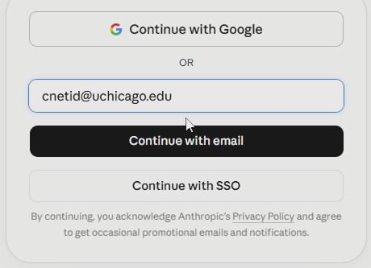
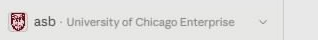

TTIC · Enterprise Claude
Ask → Delegate → Automate
That's the whole model. Your Claude access includes Claude Desktop with three tabs — Chat to think it through together, Cowork to hand off a task and get back a finished file, Code to automate a chore and keep the recipe. Each demo below hands you an input file and ten minutes, and leaves you with something real. Put this page on one half of your screen and Claude Desktop on the other.
First time? Start with Sign in once below — you'll need your UChicago CNetID, not your ttic.edu account, and that trips almost everyone exactly once.
Ten minutes each, in order
The three demos
-
Demo 1 · Chat
Read the unreadable
Hand Claude an 80-page research survey. Get the map of the territory in minutes — then make it cite its sources.
"Help me with this, right now."
-
Demo 2 · Cowork
Abstracts to spreadsheet
Fifteen paper abstracts become one screening-ready literature matrix in Excel. From a single instruction.
"Go make me the spreadsheet."
-
Demo 3 · Code
Kill a recurring data chore
Twelve messy monthly files become one clean master — plus a script that does next month in seconds.
"Do this, and let me redo it every month."
Sign in once — the confusing part
Sign in with your UChicago CNetID account (yourname@uchicago.edu) — not your ttic.edu Google account. TTIC's Claude runs on the University of Chicago's plan, so the whole sign-in is UChicago: UChicago email, UChicago login page, Duo. That's normal — you're in the right place.
Never used Claude at UChicago before? The license is free for UChicago accounts, but you may have to turn it on once. Follow Request Access to Claude Enterprise (a couple of minutes through the University's MySailPoint portal), then come back and sign in.
- Open Claude Desktop (Start menu → type "Claude"). Don't have it? Get it at claude.ai/download.
-
Type your whole @uchicago.edu email, then click Continue with SSO. Here's the tricky part: the Continue with SSO button only appears after you finish typing the full
@uchicago.eduaddress — and it is not "Continue with email" (even though you just typed an email), and not "Continue with Google". SSO is the University login.
Type the full
@uchicago.eduaddress and Continue with SSO appears — click that, not "Continue with email" and not "Continue with Google". -
On the University of Chicago page that opens, sign in with your CNetID and password, then approve the Duo prompt.
-
Check the bottom-left corner of Claude: it should say University of Chicago Enterprise. If it does, you're done — it remembers you from now on.

Bottom-left of Claude — this line is the whole test.
Corner doesn't say University of Chicago Enterprise?
You're on a free personal account — this happens when you sign in with ttic.edu or the Google button. Your work isn't covered by the University's privacy contract there. Click your initials (bottom-left) → Log out, then sign in again with your @uchicago.edu email.
No CNetID, or the password won't take? Ask TTIC IT — it's a University credential, and they'll point you to the right desk.
Then, two quick checks
- Across the top of Claude Desktop you should see three tabs: Chat, Cowork, Code. If Cowork or Code is missing or asks you to update, let it update and restart. Two one-time setups the first time you open them: Cowork needs Windows' "Virtual Machine Platform" — Claude prompts you, you approve, restart once, then reopen Claude and the Cowork tab (step-by-step, plus the stuck cases). Code needs Git for Windows — click Claude's "Download Git" button, run the installer and accept every default (the options screens don't matter here), then restart Claude. If you get stuck, do Demo 1 first — Chat always works — and come back.
- Worth knowing: Cowork and Code live in the desktop app. In a browser, claude.ai gives you Chat only — so Demos 2 and 3 won't work from a browser tab.
And on privacy: on the University's enterprise plan, your conversations and files are covered by the University of Chicago's contract with Anthropic — they're never used to train models and stay private to the University's workspace. That's what the corner check above confirms, and it covers TTIC users on the plan. For regulated data (student records, health information, personal data), check UChicago's AI guidance or your data steward first.